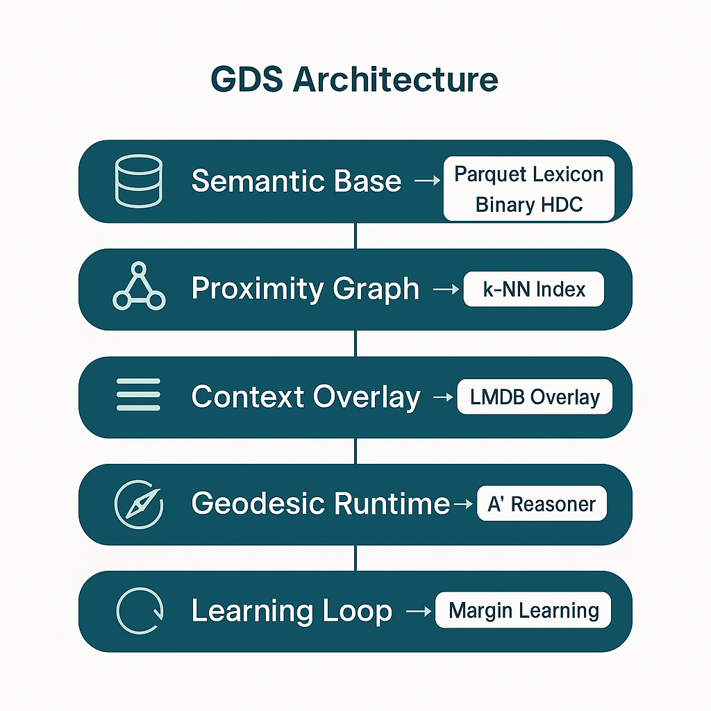

Part 3: Detailed Architecture (How the System "Reasons")
The GDS cognitive architecture is a multi-layered research prototype where each layer has a distinct responsibility, from static data storage to dynamic, adaptive learning. The reasoning process emerges from the interaction of these layers.
The 5 Layers of GDS

- Semantic Base (The Static Universe)
- Component: A large-scale, compressed Parquet file containing the lexicon of "semantic particles" generated by CSI-HDC (Conceptual State Injector using Hyperdimensional Computing).
- Role: This serves as the foundational semantic memory of the system. It stores concepts with pre-calculated properties: mass (
m0), affective spin (VAD), and 20,000-bit binary HDC vectors (q) that replace traditional token embeddings. - Includes: A static graph of structural edges derived from curated knowledge bases (e.g., ConceptNet's
IsArelation).
- Proximity Graph (The Implicit Network)
- Component: A graph layer constructed on top of the Semantic Base, featuring proximity edges.
- Role: These edges are not explicit in source data but discovered via k-Nearest Neighbors (k-NN) search (using FAISS) on the HDC vectors. This enables novel connections between semantically similar concepts, even without explicit knowledge base links. This graph represents the fabric of the semantic manifold.
- Context Overlay (The Adaptive Layer)
- Component: A dynamic key-value store (LMDB) that maps graph edges to
deltaadjustments. - Role: This implements short-term, contextual memory through temporary adjustments to edge traversal costs. During learning, the static graph remains unchanged; the system adds positive (penalty) or negative (reinforcement) deltas to this overlay. It is volatile and session-specific by default.
- Component: A dynamic key-value store (LMDB) that maps graph edges to
- Geodesic Runtime (The Reasoner)
- Component: The
Reasonermodule implementing graph-traversal (A* algorithm). - Role: This is the active reasoning component. Given start and goal concepts, the
Reasonerfinds the path of least cost rather than simply the shortest path. The cost function implements "geodesic" behavior through a weighted sum:- \(Cost(edge) = \alpha \cdot (1/m_0) + \beta \cdot (\Delta VAD) + \gamma \cdot (1/rel_{strength}) + \lambda \cdot (Overlay_{\Delta})\)
- The system naturally prefers paths through important concepts (high
m0), avoids sharp emotional shifts (lowΔVAD), follows strong structural relations, and adapts based on learned overlay deltas.
- Component: The
- Learning Loop (The Adaptive Mechanism)
- Component: The
learnandgatingmodules. - Role: This layer implements autonomous adaptation. Following a reasoning task, evaluation can trigger a learning event. The
learn_edgesfunction applies Hebbian-style updates to theContext Overlay. AValidationGatethen determines whether temporary changes improve performance on evaluation tasks before consolidation into a versioned overlay snapshot.
- Component: The
Summary of a Reasoning Cycle
A GDS reasoning cycle proceeds as follows:
- A query initiates a search for a low-cost path between two concepts in the Proximity Graph.
- The
Reasonerexplores the graph, calculating step costs using the multi-faceted cost function that reads from both the static Semantic Base and the dynamic Context Overlay. - The lowest-cost path is returned as the reasoning result.
- Based on evaluation, the Learning Loop may update the Context Overlay, reinforcing or penalizing edges and thus modifying the geometric structure for future queries.